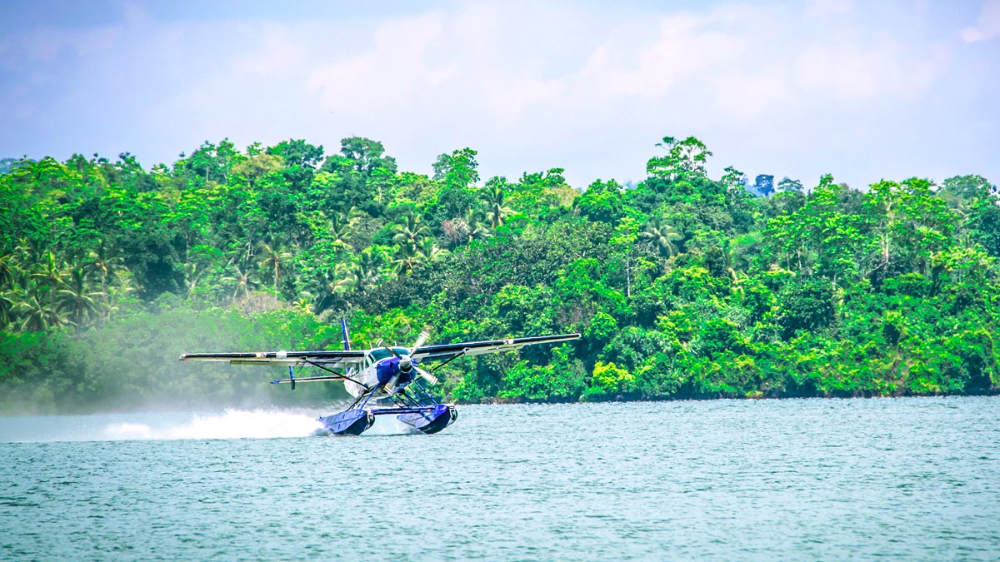
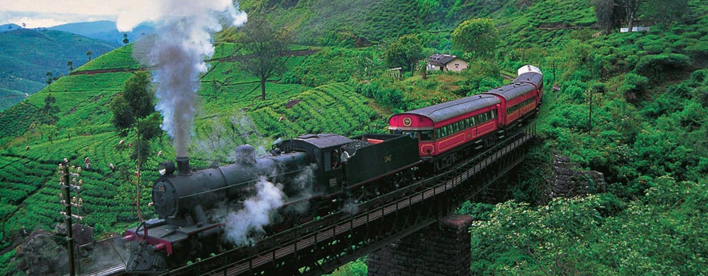

FootCycling in Sri Lanka is an excellent way to enjoy the lovely sceneries of Sri Lanka. The network of main roads and innumerable country roads, gravel paths, foot paths, cart tracks, dirt tracks and estate tracks make the all corners of the small island accessible to the cycling enthusiasts. The terrain throughout the country offers challenges for beginners and experts

Private transportation means you don't need to share the vehicle with other passengers.There is no argument private transport are much more comfortable, faster and convenient.and you can travel with your own travelling plan.it's the another best mehod for travelling in sri lanka.

As any traveler can testify when you get the option of taking any other mode of transport rather than another long distance bus, you grab it with both hands. When that mode of transport is a boat, you are in for a real treat...

The Sri Lankan Airlines Air Taxi Service offers you a quick and breathtaking journey across the island to most of the popular destinations in Sri Lanka. The Air Taxi service is also available as a connecting flight from the international airport to your holiday destination. You can even charter a flight for a group of friends or your family and enjoy a private trip over paradise!
Sri Lanka has a very intensive railway network. They were installed during the British rule. If you are wondering what transport to take during your stay in the hill country of Sri Lanka, make sure that you use the train because it provides a beautiful picturesque view of the hill side.
Bus services connect to almost all the areas in the island. Even though not the most efficient, bus service in Sri Lanka is the cheapest method of transportation.If you are new for travelling Sri lanka most widely using the buses.